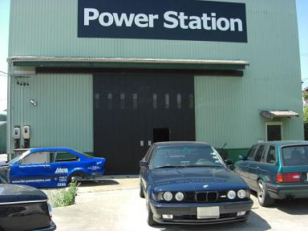 作業をお願いしたのは、愛知県にあるPowerStation 日ごろのメンテナンスからTurboなどのハードチューニングまでＯＫなショップ |
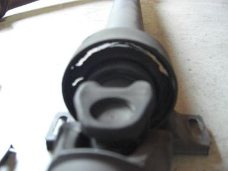 まずは、マフラーや遮熱板を外してプロペラシャフトを外しました。 ボロボロになっていたセンターベアリング こうなっていると予想していたので、あらかじめ部品を用意したおいた。 |
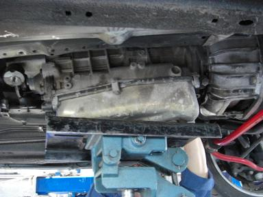 ATFを抜き、オイルクーラーのラインを外しAT降ろしに入ります。 作業中にATFがポタポタ落ちてくる。。 |
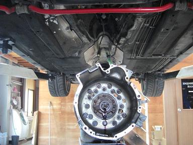 ＡＴが降りました。 ７本のボルトで止まっていました。 トルクコンバーターが思っていたよりも重量物だったので驚いた。 |
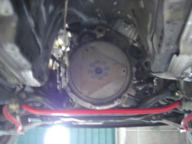 車体側の写真 フライホイールが見えます。 このAT用のフライホイールは思っていたよりも薄くて軽かった。 MT化ではフライホイールについている三角の板は不要＾＾/ フライホイールを止めている8本のボルトは、 ＡＴとＭＴでは、フライホイールの厚さが違う為に再利用はできない。 |
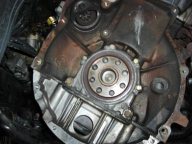 全て外した状態 上に見える小さいギヤーがセルモーター 写真を撮るのに必死であまり細かいことは覚えていない（笑 |
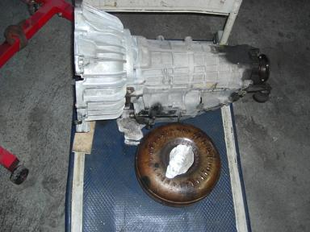 降ろしたATとトルコン 見えないところでオイル漏れしていました。 長い間お疲れ様でした。。 |
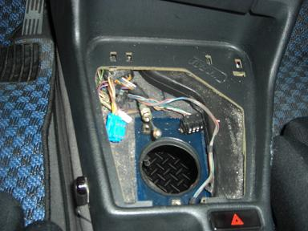 続いては内装です＾＾/ シフトノブの辺りをばらしていきます。 ３本のボルトとワイヤーを外せばゴソッと外れる。 |
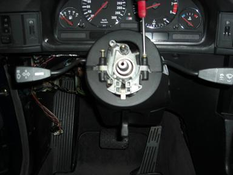 クラッチペダルをつけるためにブラケットassyで交換しないといけません。。 なのでハンドルを外し、コラム周りを分解します。 ここで第１の難関、頭がツルツルのボルト外しが待ち構えています。。 これを外さないことには次へ進めません。。 bovenさんと同じようにポンチで外そうと気合を入れていると・・・ |
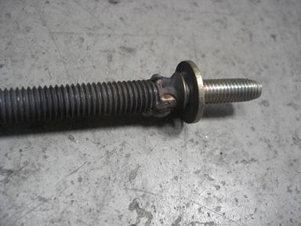 社長さんが、ボルトを溶接して外してしまいました。 自分の中で重荷だった第１の難関クリアー（笑 |
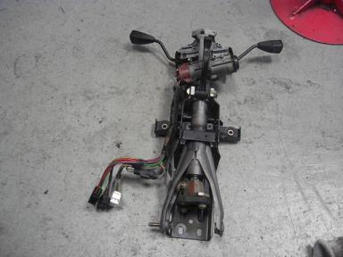 コラムが外れました。 |
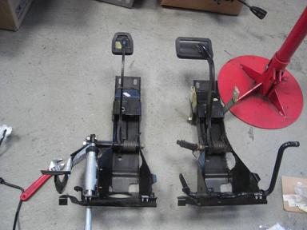 ペダルのブラケットも外れたのでアクセルのロッドなど必要な部品を移植します。 |
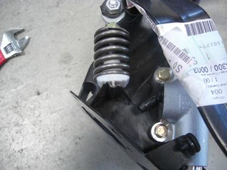 ＭＴ用のブラケット リターンスプリングを固定するステーがついている。 前期型のE34 535iには、元々このステーがついているようなので 前期型の車両の場合、ブラケットassyで交換せず、 リターンスプリングとクラッチペダルを追加するだけで３ペダルになる。 中期以降の車両をＭＴ化する時は、M5用でなくても前期535iのブラケットを探せばイイ。 （こんなマイナー情報誰かの役にたつのかなぁ。。（笑）） |
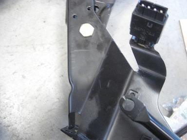 ＡＴ用のブラケットにはステーがついていない。 AT用とMT用の違いは、このステーがあるかないかだけ。。 マスターシリンダーを固定する穴はあるのに・・・＾＾； |
| 後編へ |